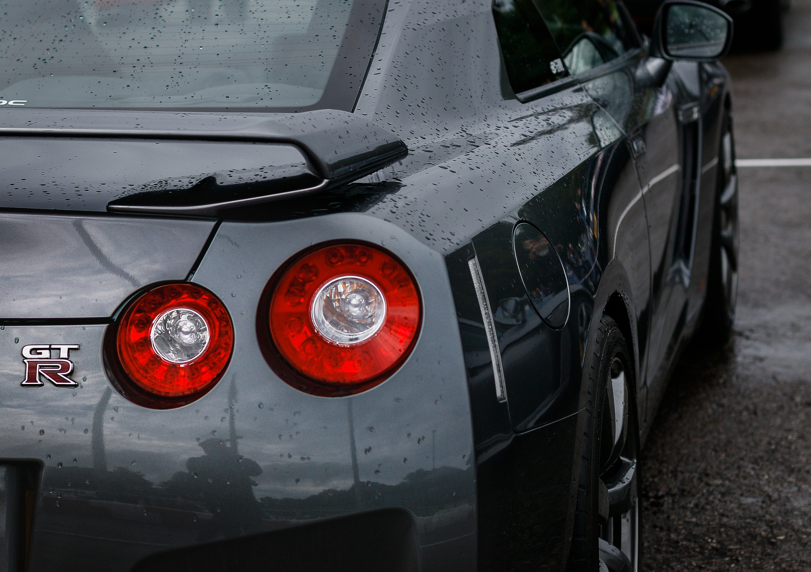

PROFILE
TAKEKI
東京工業大学在学
2023年3月からHTML・CSS・JSの独学勉強に取り組んでいます。
勉強の記録かつ、せっかく作成したサイトを無駄にしたくないためGithubを通してサイト公開しました。
あくまで勉強として作成しているので内容にはこだわっていません。
My Favorite Musics
ReoNa『ライフ・イズ・ビューティフォー』
Reonaさんの他の曲とは少し違く、明るい曲となっていて聞くと元気が出ます。
YOASOBI『あの夢をなぞって』
大学入試時にこれをリピートでずっと聞いていました。おかげで合格できたので僕にとって最高の応援ソングです。
HOBBYs
-

MUSICS
小学校２年生からピアノを習い始めました。 当時は嫌で何度も辞めたいと言っていましたが、今となっては ピアノが弾けることによって音楽を楽しむ幅が広がったと思います。 最近は電子ドラムを買おうか悩んでいます。 -

MOVIES
配信の映画やアニメをよく観ます。 おすすめの映画はと『キセキ～あの日のソビト～』です。 アニメは『転スラ』と『SPY×FAMILY』が特に好きです。 NETFLIXで韓国ドラマもいくつか観て、特に『愛の不時着』や『社内お見合い』観た後はすごく恋愛したくなりました。( ´∀｀ ) -

CARS
小さいころからスーパーカーが好きで、小学生のころからR35GTRに乗りたいという夢があり、 それに向かって勉強や受験を頑張ってきました。でも大学入ってから勉強してないので就職いいところ入れなそうです。
CAREER
- 18歳：川越高校卒業・東工大不合格
- 19歳：浪人
- 20歳：東京工業大学 生命理工学院 入学
- 21歳：東京工業大学 生命理工学院 生命理工学系 在籍中